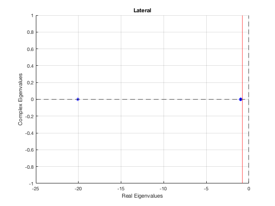
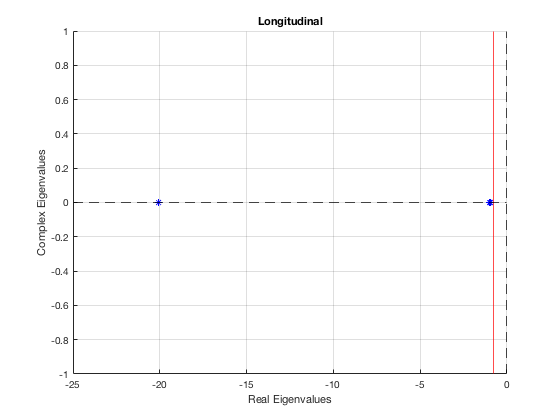
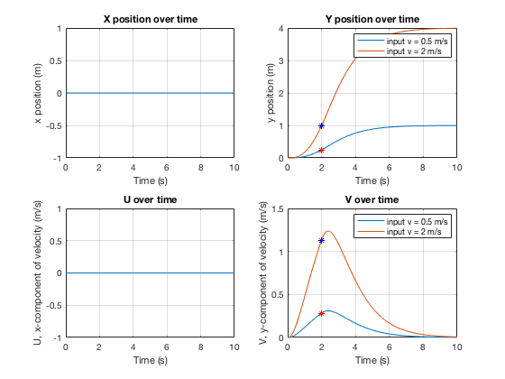
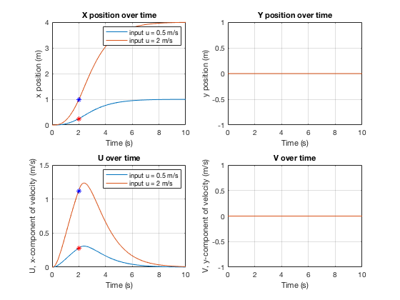
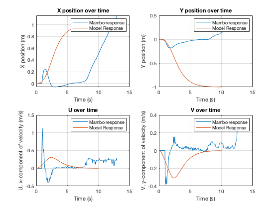

Contents
ASEN 3128 - Assignment 05 - Main
Simulation of a mambo quad-copter, implementing feedback control
Author: Margaux McFarland Date: 10/8/19
clc clear all close all %givens g = 9.81; %m/s^2 Ix = 5.8e-5; %kgm^2 Iy = 7.2e-5; %kgm^2 Iz = 1.0e-4; %kgm^2
lateral
%gains K1 = 22*Ix K2 = 40*Ix N = 300; K3 = Ix.*linspace(825,840,N); %keep trying different ranges until real eigenvalues are found for i = 1:N % A matrix A = [-K1/Ix, -K2/Ix, -(K3(i)*K2)/Ix; 1, 0, 0; 0, g, 0]; eig_val(:, i) = eig(A); %eigenvalue matrix end eig_val_desired = eig_val(:,192) %most negative REAL eigenvalue - fastest response K3_desired = K3(192) figure(1) hold on xline(-0.8, 'r'); hold on xline(0, 'k--'); hold on yline(0, 'k--'); hold on %plot the eignenvalues that meet conditions plot(eig_val_desired(1), 0, 'b*'); hold on plot(eig_val_desired(2), 0, 'b*'); hold on plot(eig_val_desired(3), 0, 'b*'); grid on title("Lateral"); xlabel('Real Eigenvalues'); ylabel('Complex Eigenvalues');
K1 =
0.0013
K2 =
0.0023
eig_val_desired =
-20.0525
-1.0051
-0.9424
K3_desired =
0.0484
 longitudinal
K4 = 22*Ix; K5 = 40*Ix; K6 = Ix.*linspace(-840,-825,N); for i = 1:N A = [-K4/Ix, -K5/Ix, -(K6(i)*K5)/Ix; 1, 0, 0; 0, -g, 0]; eig_val2(:, i) = eig(A); % eigenvalue matrix end %desired values found by searching eigen value matrix eig_val2_desired = eig_val2(:,129) %most negative REAL eigenvalue - fastest real response K6_desired = K6(129) figure(2) xline(-0.8, 'r'); hold on xline(0, 'k--'); hold on yline(0, 'k--'); hold on %plot the eignenvalues that meet conditions plot(eig_val2_desired(1),0,'b*'); hold on plot(eig_val2_desired(2), 0, 'b*'); hold on plot(eig_val2_desired(3), 0, 'b*'); grid on title('Longitudinal') xlabel('Real Eigenvalues'); ylabel('Complex Eigenvalues');
eig_val2_desired = -20.0524 -1.0205 -0.9271 K6_desired = -0.0483
Part 2 - open loop simulation
%%%%%%%lateral%%%%%%%%%% g_b = 9.81; %m/s^2 m = 0.068; %kg %controls f1 = (g_b*m)/4; f2 = (g_b*m)/4; f3 = (g_b*m)/4; f4 = (g_b*m)/4; %response inputs u_r_dev = 0; v_r_dev = 0.5; %m/s %state_vec = [x; y; z; phi; theta; xi; u; v; w; p; q; r]; initials = [0 0 0 0 0 0 0 0 0 0 0 0]; t_span = [0 10]; %seconds [t, state_vec] = ode45(@(t,state_vec) g_fun(t,state_vec, f1, f2, f3, f4, u_r_dev, v_r_dev, 1),t_span,initials); x = state_vec(:, 1); y = state_vec(:, 2); u = state_vec(:, 7); v = state_vec(:, 8); %response inputs - try again for 2 m/s u_r_dev = 0; v_r_dev = 2; %m/s %state_vec = [x; y; z; phi; theta; xi; u; v; w; p; q; r]; initials = [0 0 0 0 0 0 0 0 0 0 0 0]; t_span = [0 10]; %seconds [t2, state_vec2] = ode45(@(t2,state_vec2) g_fun(t2,state_vec2, f1, f2, f3, f4, u_r_dev, v_r_dev, 1),t_span,initials); x2 = state_vec2(:, 1); y2 = state_vec2(:, 2); u2 = state_vec2(:, 7); v2 = state_vec2(:, 8); %find index at 2 seconds index = find(t >= 2, 1); %plot the behavoir figure(3) subplot(2,2,1); plot(t, x); xlabel('Time (s)'); ylabel('x position (m)'); title('X position over time'); grid on hold on subplot(2,2,2); plot(t, y); hold on plot(t2, y2); grid on hold on plot(t(index), y(index), 'r*'); hold on plot(t(index), y2(index), 'b*'); xlabel('Time (s)'); ylabel('y position (m)'); title('Y position over time'); legend('input v = 0.5 m/s', 'input v = 2 m/s'); hold on subplot(2,2,3); plot(t, u); xlabel('Time (s)'); ylabel('U, x-component of velocity (m/s)'); title('U over time'); grid on hold on subplot(2,2,4); plot(t, v); hold on plot(t2, v2); grid on hold on plot(t(index), v(index), 'r*'); hold on plot(t(index), v2(index), 'b*'); xlabel('Time (s)'); ylabel('V, y-component of velocity (m/s)'); title('V over time'); legend('input v = 0.5 m/s', 'input v = 2 m/s'); %%%%%%%longitudinal%%%%%%%%%% g_b = 9.81; %m/s^2 m = 0.068; %kg %controls f1 = (g_b*m)/4; f2 = (g_b*m)/4; f3 = (g_b*m)/4; f4 = (g_b*m)/4; %response inputs u_r_dev = 0.5; v_r_dev = 0; %m/s %state_vec = [x; y; z; phi; theta; xi; u; v; w; p; q; r]; initials = [0 0 0 0 0 0 0 0 0 0 0 0]; t_span = [0 10]; %seconds [t, state_vec] = ode45(@(t,state_vec) g_fun(t,state_vec, f1, f2, f3, f4, u_r_dev, v_r_dev, 1),t_span,initials); x = state_vec(:, 1); y = state_vec(:, 2); u = state_vec(:, 7); v = state_vec(:, 8); %response inputs - try again for 2 m/s u_r_dev = 2; v_r_dev = 0; %m/s %state_vec = [x; y; z; phi; theta; xi; u; v; w; p; q; r]; initials = [0 0 0 0 0 0 0 0 0 0 0 0]; t_span = [0 10]; %seconds [t2, state_vec2] = ode45(@(t2,state_vec2) g_fun(t2,state_vec2, f1, f2, f3, f4, u_r_dev, v_r_dev, 1),t_span,initials); x2 = state_vec2(:, 1); y2 = state_vec2(:, 2); u2 = state_vec2(:, 7); v2 = state_vec2(:, 8); %find index at 2 seconds index = find(t >= 2, 1); %plot the behavior figure(4) subplot(2,2,1); plot(t, x); hold on plot(t2, x2); grid on hold on plot(t(index), x(index), 'r*'); hold on plot(t(index), x2(index), 'b*'); xlabel('Time (s)'); ylabel('x position (m)'); title('X position over time'); legend('input u = 0.5 m/s', 'input u = 2 m/s'); hold on subplot(2,2,2); plot(t, y); hold on plot(t2, y2); xlabel('Time (s)'); ylabel('y position (m)'); title('Y position over time'); grid on hold on subplot(2,2,3); plot(t, u); hold on plot(t2, u2); grid on hold on plot(t(index), u(index), 'r*'); hold on plot(t(index), u2(index), 'b*'); xlabel('Time (s)'); ylabel('U, x-component of velocity (m/s)'); title('U over time'); legend('input u = 0.5 m/s','input u = 2 m/s'); hold on subplot(2,2,4); plot(t, v); hold on plot(t2, v2); xlabel('Time (s)'); ylabel('V, y-component of velocity (m/s)'); title('V over time'); grid on 
Part 3 - compare Mambo copter
load RSdata_one_1509.mat %get x, y, u, and v at 2 seconds times=rt_estimatedStates.time(:); index = find(times >= 2, 1); x_data = rt_estimatedStates.signals.values(:,1); y_data = rt_estimatedStates.signals.values(:,2); u_data = rt_estimatedStates.signals.values(:,7); v_data = rt_estimatedStates.signals.values(:,8); %simulation with both lateral and longitudinal velocoity inputs %response inputs u_r_dev = 0.5; v_r_dev = -0.5; %m/s %state_vec = [x; y; z; phi; theta; xi; u; v; w; p; q; r]; initials = [0 0 0 0 0 0 0 0 0 0 0 0]; t_span = [0 10]; %seconds [t, state_vec] = ode45(@(t,state_vec) g_fun(t,state_vec, f1, f2, f3, f4, u_r_dev, v_r_dev, 1),t_span,initials); x = state_vec(:, 1); y = state_vec(:, 2); u = state_vec(:, 7); v = state_vec(:, 8); % plot mambo data figure(5) subplot(2,2,1); plot(times, x_data); hold on plot(t, x); grid on xlabel('Time (s)'); ylabel('X position (m)'); title('X position over time'); legend('Mambo response','Model Response'); hold on subplot(2,2,2); plot(times, y_data); hold on plot(t, y); xlabel('Time (s)'); ylabel('Y position (m)'); title('Y position over time'); legend('Mambo response','Model Response'); grid on hold on subplot(2,2,3); plot(times, u_data); hold on plot(t, u); grid on xlabel('Time (s)'); ylabel('U, x-component of velocity (m/s)'); title('U over time'); legend('Mambo response','Model Response'); hold on subplot(2,2,4); plot(times, v_data); hold on plot(t, v); xlabel('Time (s)'); ylabel('V, y-component of velocity (m/s)'); title('V over time'); legend('Mambo response','Model Response'); grid on
Functions Called
The following functions were built and called as apart of this assignment.
function ddt = g_fun(t,state_vec, f1, f2, f3, f4, u_r_dev, v_r_dev,t_stop) %% ode function for part 2 (linearized, with open loop control) %givens m = 0.068; %kg rad = 0.06; %m Ix = 5.8e-5; %kgm^2 Iy = 7.2e-5; %kgm^2 Iz = 1.0e-4; %kgm^2 g_b = [0; 0; 9.81]; %m/s^2 k = 0.0024; %Nm/N %lateral gains K1 = 22*Ix; % controls roll rate K2 = 40*Ix; % controls bank K3 = 0.0484; % controls inertial velcoity in y direction, v %longitudinal gains K4 = 22*Iy; % controls pitch rate K5 = 40*Iy; % controls elevation K6 = -0.0483; % controls inertial velcoity in x direction, u %azimuth gain K7 = 0.004; %Nm/(rad/s) %unpack state vector - all state variables are equal to their deviations in %steady hover x_dev = state_vec(1, 1); y_dev = state_vec(2, 1); z_dev = state_vec(3, 1); phi_dev = state_vec(4, 1); theta_dev = state_vec(5, 1); xi_dev = state_vec(6, 1); u_dev = state_vec(7, 1); v_dev = state_vec(8, 1); w_dev = state_vec(9, 1); p_dev = state_vec(10, 1); q_dev = state_vec(11, 1); r_dev = state_vec(12, 1); %deviations f1_dev = 0; f2_dev = 0; f3_dev = 0; f4_dev = 0; %check if after 2 seconds, then set response velocities to zero %only do this when response velocitities stop if t_stop && t >= 2 v_r_dev = 0; u_r_dev = 0; end %difference here is including the velocity inputs Lc_dev = K2*(K3*(v_r_dev - v_dev) - phi_dev) - K1*p_dev; Mc_dev = K5*(K6*(u_r_dev - u_dev) - theta_dev) - K4*q_dev; Nc_dev = -K7*r_dev; Zc_dev = (f1_dev + f2_dev + f3_dev + f4_dev); % longitudinal dq_dev = (1/Iy)*Mc_dev; dtheta_dev = q_dev; du_dev = -g_b(3)*theta_dev; % lateral dp_dev = (1/Ix)*Lc_dev; dphi_dev = p_dev; dv_dev = g_b(3)*phi_dev; % azimuth dr_dev = (1/Iz)*Nc_dev; % vertical dw_dev = (1/m)*Zc_dev; Zc = Zc_dev + (f1 + f2 + f3 + f4)*(cos(theta_dev)*cos(phi_dev)); %N ddt = [u_dev; v_dev; w_dev; p_dev; q_dev; r_dev; du_dev; dv_dev; dw_dev + Zc - m*g_b(3); dp_dev; dq_dev; dr_dev]; end